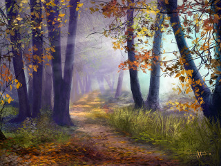
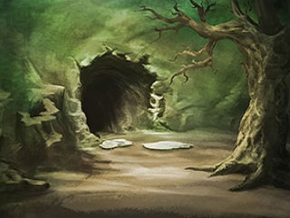
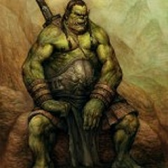
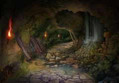
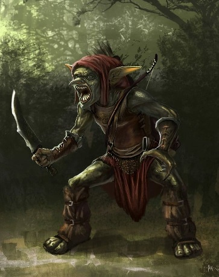
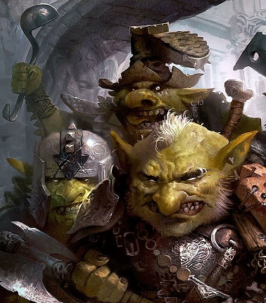
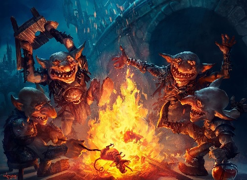
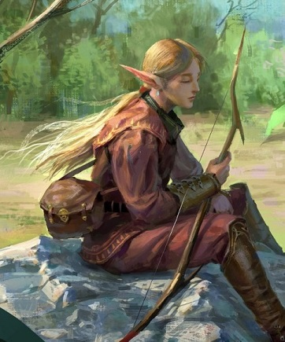

Вы сворачиваете на тропинку, ведущую к пещере.
Через десяток метров вам преграждает путь поваленное
дерево.
На нём с видимым комфортом устроился старец в серой хламиде из грубой ткани.
Он пристально
смотрит вам в глаза.

Вы обходите дерево и направляетесь дальше по тропинке,
но, когда из-за поворота показалась
скала,
видите огромного орка, охраняющего вход в пещеру.

Не одержав над ним победу, дальше не пройти.
Без раздумий вы бросаетесь в бой.
*Звуки сражения*
Сражение подходит к концу, враг вымотан,
но ещё уверенно держится на ногах.

Немного отдохнув после боя, вы проходите в пещеру.
Света снаружи хватает, чтобы хорошо видеть всё
помещение.
В центре вы видите еле тлеющее костровище, рядом большой котёл, накрытый крышкой.
По левой
стене несколько кульков тряпья,
то ли лежанки, то ли личные вещи, не разобрать.
С противоположной от входа
стороны - уходящий в темноту коридор. Очевидно, вам туда.
Как только вы приближаетесь ко входу в темный коридор,
из него прямо на вас выскакивает разъярённый гоблин.

Вероятно, шум боя отвлёк его от чего-то действительно важного.
Гоблин вооружён кинжалом, но, после орка у входа, он не выглядит опасным.
Вы первым начинаете бой, рассчитывая
на быструю победу.

За секунду прикинув в уме шансы на победу,
вы начинаете наносить удары по гоблинам:
Вы проходите темный коридор и внезапно оказываетесь
в просторном помещении, ярко освещённом факелами.
По
центру стоит огромный котёл,
а вокруг него сидят не меньше десятка гоблинов.
Кажется, вы оторвали их от
обеда...

Как только вас замечают, на мгновение воцаряется тишина,
которая сразу сменяется воинственными криками
и
лязгом извлекаемых из ножен мечей...
Все на одного - нечестно, но такова судьба.

Вы с честью выдержали это испытание,
сумев сохранить жизнь в неравном бою!
После всего, осмотрев
пещеру,
вы находите в дальнем отнорке огромный сундук,
доверху наполненный монетами, украшениями
и
посудой из драгоценных металлов.
После недолгих споров решили поделить всё поровну.
Возвращаясь с добычей в деревню
вы по какому-то наитию отсыпаете часть монет старцу,
который будто и не
сходил с места за это время.
В ответ вас снова будто просвечивают насквозь
взглядом необычно ясных
глаз...
Эльф заметно передёргивает плечом,
явно чувствуя себя некомфортно под этим взглядом...